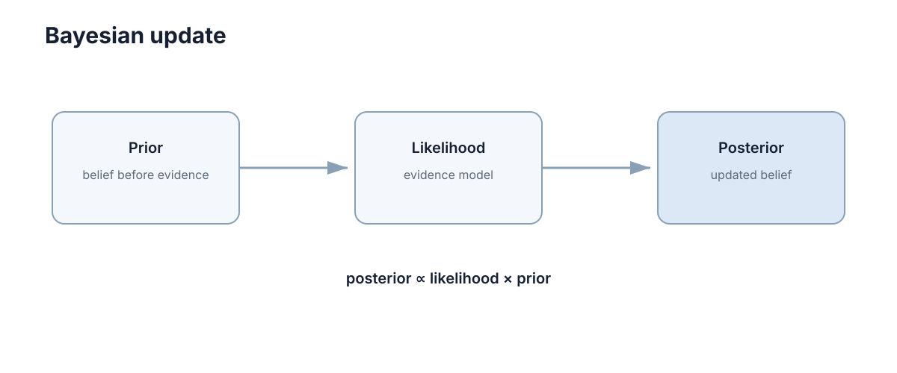

Conditional Probability & Bayes
条件概率回答的是：已经知道一些信息后，原来的判断应该怎样改变。 这正是传感器融合、目标跟踪和机器人定位不断在做的事情。
如果把概率看成对未知量的一种打分，那么条件概率就是「拿到新线索之后重新打分」的规则；而 Bayes 公式把这条规则压缩成一行，它把容易标定的「假设导致观测」翻转成真正想知道的方向「观测支持假设」。SLAM、卡尔曼滤波、粒子滤波乃至采样型生成模型，都是这条公式的反复应用。

条件概率把背景信息写进概率
条件概率的定义是
四个量各司其职：\(P(A\cap B)\) 是联合概率，表示 A 与 B 同时成立；\(P(B)\) 是边缘概率，充当归一化常数；\(P(A\mid B)\) 是已知 B 之后 A 的概率；\(P(A)\) 是不考虑 B 时对 A 的默认判断。这四个量在机器人推断里的分工可以对照如下。
| 符号 | 名称 | 数学含义 | 工程中由谁提供 |
|---|---|---|---|
| \(P(A\cap B)\) | 联合概率 | A 与 B 同时成立的程度 | 通常不直接测量，由分解式算出 |
| \(P(B)\) | 边缘概率 | 观测出现的总体频率 | 对所有假设求和的归一化项 |
| \(P(A\mid B)\) | 条件概率 | 已知 B 后 A 的可信度 | 推断的目标输出 |
| \(P(A)\) | 先验概率 | 不看 B 时的默认判断 | 上一帧后验、地图或物理约束 |
定义可以沿两个方向拆开：\(P(A\cap B)=P(A\mid B)P(B)=P(B\mid A)P(A)\)。同一组数据下两个方向的含义完全不同，而工程上通常只有一个方向可以直接标定，这就是需要 Bayes 公式的根本原因。
条件概率还有一个配套的恒等式，即全概率公式：若若干互斥且完备的事件 \(B_i\) 把样本空间分割开，则 \(P(A)=\sum_i P(A\mid B_i)P(B_i)\)，连续版本把求和换成对条件密度的积分。Bayes 公式的分母正是这一恒等式作用于 \(p(z\mid x)p(x)\) 的结果，因此「归一化」的实质是一次加权平均，而不是额外引入的假设。
\(P(A)\) 与 \(P(A\mid B)\) 可以差很多。设「前方是障碍」的先验为 0.05，一旦 LiDAR 测到 2 m 内的强回波，这个概率可能跳到 0.9。原因不是障碍变多了，而是条件 B 把样本空间压缩到「已经测到回波」这个子集，在该子集内 A 占了绝大多数。所以条件概率的实质是重新划定讨论范围，而不是修改世界本身。
还有一个经常被忽略的约束：条件一旦给出就被当成事实，而不是「大概成立」。在 \(P(A\mid B)\) 里 B 必须严格成立，因此若观测本身有噪声，正确写法是把 B 换成确定性事件「传感器输出了读数 \(z\)」，让全部不确定性进入似然项 \(p(z\mid x)\)。这一步是工程建模与教科书公式之间最容易出错的地方。
| 陷阱 | 错误写法 | 后果与正确做法 |
|---|---|---|
| 混淆条件方向 | 用 \(P(A\mid B)\) 代替 \(P(B\mid A)\) | 两者一般不相等，必须用 Bayes 反演 |
| 忽略分母极小 | 在 \(P(B)\) 很小时直接求商 | 结果方差爆炸，估计不可靠 |
| 把信念当条件 | 写成「已知大概有回波」 | 条件必须是事件，应写成观测取值 |
Bayes 反演关系
Bayes 公式把两个方向的条件概率互换：
前式用于离散假设，后式用于连续量，区别只在于分母从求和变成积分。四个因子在推断中的角色可以这样记。
| 因子 | 数学地位 | 工程含义 | 典型来源 |
|---|---|---|---|
| \(p(x)\) | 先验分布 | 观测前的信念 | 上一时刻估计、地图、运动模型 |
| \(p(z\mid x)\) | 似然函数 | 假设 x 下出现该观测的可能性 | 传感器噪声模型与标定数据 |
| \(p(x\mid z)\) | 后验分布 | 融合后的信念 | 推断的输出 |
| \(p(z)\) | 证据项 | 观测的总体可能性 | 由前两项求和或积分得到 |
对推断而言常写成比例形式 \(p(x\mid z)\propto p(z\mid x)p(x)\)，因为分母与 \(x\) 无关，比较不同 \(x\) 时可以暂时忽略，只有在需要绝对概率或做模型比较时才必须算出来。
Bayes 公式之所以叫「反演」，是因为它提供了一条从可建模方向通向感兴趣方向的通道：传感器噪声模型 \(p(z\mid x)\) 描述「给定真实位置读数如何分布」，可以通过标定实验测出；而真正想知道的 \(p(x\mid z)\) 描述「给定读数位置在哪里」，无法直接测量。两者方向相反，公式把不可测量转换成可测量。
代价也对等地出现：分母 \(p(z)\) 需要一次积分，状态维度高时没有解析解。工程上的三条出路分别是使用共轭先验（下文专节）、使用采样近似（粒子滤波）、或者只优化比例形式的分子（MAP 估计）。
先验信息的数学表达
机器人上一时刻的位置估计、地图约束、目标运动模型都可以形成先验，新传感器观测只是新增证据，不应每次把过去的信息全部丢掉。先验的三种典型来源与它们的数学形式如下。
| 先验来源 | 数学形式 | 具体例子 |
|---|---|---|
| 上一时刻的后验 | \(p(x_t)=p(x_{t-1}\mid z_{1:t-1})\) | 递推滤波中的预测分布 |
| 物理或运动模型 | \(p(x_t)=\int p(x_t\mid x_{t-1})p(x_{t-1})\,dx_{t-1}\) | 匀速、最大转弯半径约束 |
| 静态环境知识 | 直接给定的分布 | 车道线位置、地图中的墙体 |
Bayes 递推正是「旧后验成为新先验」的循环：
这个循环有一个重要的定量含义：先验不是随手加的惩罚项，而是对历史信息的压缩汇总。丢掉先验、只用当前帧，等价于宣称「所有历史观测都无用」。在观测频繁且噪声很低时这也许无害，但在观测稀疏或传感器间歇失效时会立刻崩塌，因为没有任何机制约束解跳变。
先验的强弱可以量化。一个方差为 \(\sigma_0^2\) 的高斯先验与一个方差为 \(\sigma_z^2\) 的观测相比，权重之比约为 \(\sigma_z^2/\sigma_0^2\)。先验方差越小，说明越自信，对后验的拉扯越强。一个常用的直觉换算是把先验看成若干次「虚拟观测」：若单次观测噪声方差为 \(\sigma_z^2\)，则先验相当于 \(\sigma_z^2/\sigma_0^2\) 次真实观测所携带的信息量。
最大似然和最大后验回答不同问题
Maximum Likelihood 只寻找让观测最可能的参数，Maximum A Posteriori 还考虑先验：
取对数把乘积变成加法，这一步在数值上至关重要，因为概率连乘极易下溢到零，而连加不会。
| 维度 | ML | MAP |
|---|---|---|
| 最大化对象 | 似然 \(p(z\mid x)\) | 后验 \(p(x\mid z)\) |
| 是否使用先验 | 不使用 | 使用，先验对数充当正则项 |
| 数据少或噪声大 | 容易过拟合到噪声 | 被先验稳住，解更平缓 |
| 数据充分时 | 与 MAP 趋近 | 似然主导，先验被淹没 |
| 与正则化的关系 | 无对应 | 高斯先验等价于 L2，拉普拉斯先验等价于 L1 |
二者在数据充分时趋于一致，数据少或噪声大时差别明显。定量地说，\(N\) 次独立观测后后验不确定度按 \(1/\sqrt{N}\) 收缩，先验的相对影响随之趋零；而在 \(N=1\) 时，先验与观测的权重完全由各自方差之比决定。这解释了为什么「最像当前观测的状态」不一定等于「综合全部信息后最可信的状态」：一个被强噪声污染的观测可能把 ML 解拉到很远，而 MAP 因为带运动先验会把它拉回合理范围。
一个离散更新例子
假设机器人在 A 与 B 两个位置的先验概率分别为 0.7 与 0.3，传感器看到门；在 A 看到门的概率为 0.2，在 B 为 0.9。按 Bayes 公式逐步计算：
| 位置 | 先验 | 似然 | 先验 × 似然 | 归一化后的后验 |
|---|---|---|---|---|
| A | 0.70 | 0.20 | 0.140 | 0.140 / 0.410 ≈ 0.341 |
| B | 0.30 | 0.90 | 0.270 | 0.270 / 0.410 ≈ 0.659 |
| 合计 | 1.00 | 不适用 | 0.410 | 1.000 |
结论有两层。第一，B 的概率从 0.30 上升到约 0.66，说明这次观测确实携带信息。第二，A 并没有被清零，因为它的先验优势部分抵消了似然劣势。若把似然改成 0.2 对 0.98，后验约变成 A 为 0.32、B 为 0.68，变化很小，说明单条较弱证据很难推翻一个较强先验。核心操作始终是先验乘观测可信度，再归一化。
用赔率语言看会更直观，后验赔率等于先验赔率乘以似然比：
上例中先验赔率约为 2.33，似然比约为 0.22，乘得后验赔率 0.52，对应 \(P(B\mid z)=1/(1+0.52)\approx0.66\)，与表格一致。这种形式的优点是多次独立观测时只需把似然比连乘，无需每步重新归一化。
证据强度与基准概率
低基准概率事件即使检测器很灵敏，阳性结果也未必意味着事件真的发生。衡量证据强弱的正确尺度是似然比 \(\mathrm{LR}=P(z\mid A)/P(z\mid\neg A)\)，它只描述先验赔率被改变了几倍，而最终后验还取决于起点高低。
| 似然比范围 | 证据强度 | 让先验赔率改变的倍数 | 需要的同向观测次数 |
|---|---|---|---|
| 1 – 3 | 弱 | 不足 3 倍 | 往往需要 10 次以上 |
| 3 – 10 | 中等 | 3 到 10 倍 | 3 到 5 次 |
| 10 – 30 | 强 | 10 到 30 倍 | 1 到 2 次 |
| 大于 30 | 很强 | 单次即可压倒中等先验 | 1 次 |
这张表可以直接用于工程判断：若某个检测器的似然比只有 2，那么指望它单独给出高置信度结论是不现实的，必须依赖多次观测累积或引入更强先验；反之若似然比达到 30 以上，一次观测就足以把 50% 的先验推到约 97%，此时再堆叠更多同类观测收益递减。
把似然比取对数会得到以比特计的信息量 \(\log_2 \mathrm{LR}\)：似然比为 2 时约 1 比特，为 10 时约 3.3 比特，为 100 时约 6.6 比特。这个度量可以直接与信道的每比特成本对比，用来判断一次观测是否值得它的开销，也可以判断两条独立证据是否能简单相加。
同时要注意基准概率的绝对影响。同样一个似然比为 10 的检测器，作用在 50% 先验上能把后验推到约 91%，而作用在 0.1% 先验上只能推到约 1%。似然比决定「改变多少倍」，先验决定「起点在哪」，两者缺一不可，下一节的数字例子会把这件事算清楚。
连续情形下的 Bayes 更新
离散例子好懂，但机器人中的位置与速度都是连续量，此时先验与似然都是概率密度，公式形式不变。当先验与似然都取高斯、且观测模型线性时，后验仍为高斯，这类「后验与先验同族」的分布对称为共轭先验，高斯—高斯是最常用的组合：
后验是 \(\mathcal{N}(\mu,\sigma^2)\)，并且有闭式解：
这个结果有一个干净的读法：精度（方差的倒数）可以直接相加。定义 \(\tau=1/\sigma^2\)，则 \(\tau=\tau_0+\tau_z\)，后验均值就是两端按精度加权的平均。
| 情形 | 精度比 | 后验均值 | 后验标准差 |
|---|---|---|---|
| 先验极强、观测很糙 | 100 : 1 | 几乎等于 \(\mu_0\) | 约 0.0995 |
| 二者等权 | 1 : 1 | 两者中点 | 约 0.707 |
| 先验很糙、观测极强 | 1 : 100 | 几乎等于 \(z\) | 约 0.0995 |
「观测越多、先验越被压制」的定量关系就来自精度的可加性。连续做 \(N\) 次方差同为 \(\sigma_z^2\) 的独立观测后：
先验权重占比为 \(\tau_0/(\tau_0+N\tau_z)\)，按 \(1/N\) 衰减；后验标准差按 \(1/\sqrt{N}\) 收缩。取 \(\sigma_0=\sigma_z=1\) 时，\(N=1\) 先验权重 50%，\(N=10\) 降到约 9%，\(N=100\) 只剩约 1%，这就是长期运行的系统可以逐渐忘掉粗糙初始先验的原因。
共轭配对不止高斯一种，它们把一次积分换成一次参数更新，计算量恒定，适合嵌入式实时系统。
| 先验族 | 似然族 | 后验族 | 典型用途 |
|---|---|---|---|
| 高斯 | 高斯（方差已知） | 高斯 | 位置与速度估计 |
| Beta | 伯努利或二项 | Beta | 成功率、占用栅格概率 |
| Dirichlet | 多项 | Dirichlet | 离散地图类别 |
| Gamma | 泊松 | Gamma | 到达率、计数型传感器 |
代价是模型灵活性下降：若真实分布明显偏离高斯，强行使用共轭更新会带来系统性偏差，此时应改用采样表示或多峰分布。
从 Bayes 到递推滤波
单次 Bayes 更新只处理「一个先验加一个观测」。真实系统要在时间上连续运行，于是把它串成预测与更新两步循环：
预测步把历史信念按运动模型向前传播，更新步吸收本帧观测，后验成为下一帧的先验，如此递推。为什么状态估计必须递推，而不能每次从头批处理，理由有三条且都带量化后果。
| 原因 | 从头批处理的后果 | 递推的后果 |
|---|---|---|
| 计算量随时间累积 | \(T\) 帧后代价与 \(T\) 成正比 | 每帧代价恒定，与运行时长无关 |
| 历史数据必须全部保留 | 需要存储全部原始观测 | 只需当前信念与少量状态 |
| 实时性预算 | 延迟随运行时长增长直至失控 | 延迟固定在单帧预算内 |
三条合起来说明递推不是省事的技巧，而是在线系统唯一可行的形式：一个必须保存全部历史才能给出当前位置的系统，运行十分钟后必然崩溃，无论算法多精确。
递推的代价是信息不再显式保留。一旦把后验压缩成参数（例如高斯均值与方差），历史细节就被丢弃，这称为充分统计量假设。若真实后验是多峰的，例如走廊中有两处相似门框，单高斯假设会强行合并成单峰，出现状态丢失，这正是采用粒子表示多峰信念的动机。递推滤波的完整工程实现见 ../robotics/02-sensing-estimation.md，那里会看到本节两行公式就是所有滤波器的骨架。
基础率谬误
基础率谬误是把似然当成后验的典型错误：看到检测器很准，就直接认为阳性结果意味着事件成立。下面用具体数字说明。
设定某疾病患病率为 1%，即 \(P(D)=0.01\)；检测灵敏度为 99%，即 \(P(+\mid D)=0.99\)；特异度为 95%，即假阳性率 \(P(+\mid\neg D)=0.05\)。先算阳性总概率：
| 分项 | 计算式 | 数值 |
|---|---|---|
| 真阳性 | 灵敏度 × 患病率 | 0.0099 |
| 假阳性 | 假阳性率 × 健康比例 | 0.0495 |
| 阳性总概率 | 两者之和 | 0.0594 |
于是阳性预测值为
结果只有约 16.7%。直观原因很清楚：健康人群的基数是患者的 99 倍，即使假阳性率只有 5%，假阳性的绝对数量仍是真阳性的 5 倍。
改变任一项的影响差异很大：患病率升到 10% 时阳性预测值升到约 0.688；特异度升到 99% 时约为 0.50；而灵敏度降到 90% 时仍约 0.154。可见在低基准率下特异度远比灵敏度重要，因为假阳性直接乘在庞大的健康基数上。这也解释了故障检测与异常识别为什么通常把目标定在极低的假阳性率而不是极高的召回率。
工程上有三条结论：报告阳性结果时必须同时给出基准率，否则数字会严重误导；若基准率极低，应先用低成本手段提高先验再使用高精度检测器；连续两次独立检测可以把似然比连乘，「一个离散更新例子」一节给出的赔率规则在这里最有用。
下一步：继续读 ./05-markov-processes.md，看 Bayes 递推中的运动模型如何被 Markov 性刻画；再读 ./03-probability-random-variables.md 补齐分布与期望的基础；若关心估计的完整工程实现，转到 ../robotics/02-sensing-estimation.md。